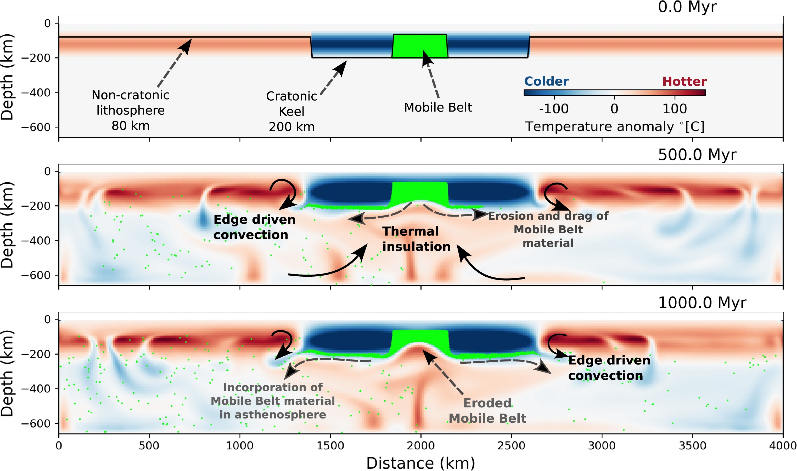

Rheological and topographic implications of thermal insulation created by supercontinents

Resumo em Português
A litosfera continental espessa funciona como um isolante térmico, promovendo uma transferência de calor condutiva menos eficiente para a superfície. Como consequência, a temperatura do manto sob supercontinentes pode aumentar em relação às regiões circundantes. Por outro lado, o manto astenosférico quente pode modificar a estrutura térmica e reológica da base da litosfera. A compreensão de como a litosfera e a astenosfera coevoluem, considerando variações laterais na espessura litosférica, depende da representação adequada das propriedades mecânicas do manto superior na escala de tempo geológico.Por meio de cenários numéricos termomecânicos, investigamos como a litosfera continental espessa — aqui denominada quilha cratônica — pode afetar o fluxo de calor para a superfície, o padrão convectivo no interior do manto astenosférico e os impactos da evolução térmica de uma quilha cratônica em escalas de tempo de centenas de milhões de anos. Foram consideradas diferentes posições laterais para a quilha cratônica e movimento relativo entre a litosfera e a base do manto superior para emular o movimento lateral ao longo do tempo geológico. Os resultados numéricos indicam que o isolamento térmico promovido pela litosfera continental espessa induz o desenvolvimento de anomalias térmicas positivas na astenosfera, que eventualmente provocam o enfraquecimento da base da litosfera continental. O aquecimento do manto sublitosférico sob quilhas cratônicas é relevante apenas quando a litosfera continental apresenta baixa velocidade relativa em relação à base do manto superior. Adicionalmente, a presença de um cinturão móvel com viscosidade efetiva menor do que a litosfera cratônica circundante contribui para a erosão basal por isolamento térmico e fluxo divergente ascendente na astenosfera, induzindo o enfraquecimento da litosfera continental entre blocos cratônicos. Os resultados contribuem para a compreensão de como o isolamento térmico pode afetar a evolução das quilhas cratônicas e convidam a revisitar exemplos naturais para testar as interpretações atuais das discordâncias presentes em bacias intracratônicas, comumente explicadas por processos tectônicos e/ou dinâmicos.